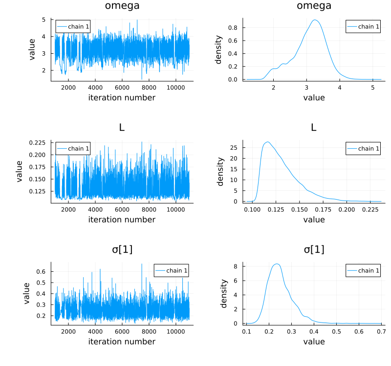

Bayesian Inference of Pendulum Parameters
In this tutorial, we will perform Bayesian parameter inference of the parameters of a pendulum.
Set up simple pendulum problem
using DiffEqBayes, OrdinaryDiffEq, RecursiveArrayTools, Distributions, Plots, StatsPlots,
BenchmarkTools, TransformVariables, StanSample, DynamicHMCLet's define our simple pendulum problem. Here, our pendulum has a drag term ω and a length L.

We get first order equations by defining the first term as the velocity and the second term as the position, getting:
function pendulum(du, u, p, t)
ω, L = p
x, y = u
du[1] = y
du[2] = -ω * y - (9.8 / L) * sin(x)
end
u0 = [1.0, 0.1]
tspan = (0.0, 10.0)
prob1 = ODEProblem(pendulum, u0, tspan, [1.0, 2.5])ODEProblem with uType Vector{Float64} and tType Float64. In-place: true
Non-trivial mass matrix: false
timespan: (0.0, 10.0)
u0: 2-element Vector{Float64}:
1.0
0.1Solve the model and plot
To understand the model and generate data, let's solve and visualize the solution with the known parameters:
sol = solve(prob1, Tsit5())
plot(sol)
It's the pendulum, so you know what it looks like. It's periodic, but since we have not made a small angle assumption, it's not exactly sin or cos. Because the true dampening parameter ω is 1, the solution does not decay over time, nor does it increase. The length L determines the period.
Create some dummy data to use for estimation
We now generate some dummy data to use for estimation
t = collect(range(1, stop = 10, length = 10))
randomized = VectorOfArray([(sol(t[i]) + 0.01randn(2)) for i in 1:length(t)])
data = convert(Array, randomized)2×10 Matrix{Float64}:
0.0455949 -0.366703 0.130286 0.0944516 … -0.0223867 -0.00862668
-1.21431 0.331168 0.313331 -0.233842 0.0186575 -0.000177065Let's see what our data looks like on top of the real solution
scatter!(data')This data captures the non-dampening effect and the true period, making it perfect for attempting a Bayesian inference.
Perform Bayesian Estimation
Now let's fit the pendulum to the data. Since we know our model is correct, this should give us back the parameters that we used to generate the data! Define priors on our parameters. In this case, let's assume we don't have much information, but have a prior belief that ω is between 0.1 and 3.0, while the length of the pendulum L is probably around 3.0:
priors = [
truncated(Normal(0.1, 1.0), lower = 0.0),
truncated(Normal(3.0, 1.0), lower = 0.0)
]2-element Vector{Distributions.Truncated{Distributions.Normal{Float64}, Distributions.Continuous, Float64, Float64, Nothing}}:
Truncated(Distributions.Normal{Float64}(μ=0.1, σ=1.0); lower=0.0)
Truncated(Distributions.Normal{Float64}(μ=3.0, σ=1.0); lower=0.0)Finally, let's run the estimation routine from DiffEqBayes.jl with the Turing.jl backend to check if we indeed recover the parameters!
bayesian_result = turing_inference(prob1, Tsit5(), t, data, priors;
syms = [:omega, :L], sample_args = (num_samples = 10_000,))╭─FlexiChain (10000 iterations, 1 chain) ──────────────────────────────────────╮
│ ↓ iter = 1001:11000 │
│ → chain = 1:1 │
│ │
│ Parameters (3) ── AbstractPPL.VarName │
│ Float64 omega, L │
│ Vector{Float64} σ (1,) │
│ │
│ Extras (14) │
│ Int64 n_steps, tree_depth │
│ Bool is_accept, numerical_error │
│ Float64 acceptance_rate, log_density, hamiltonian_energy, │
│ hamiltonian_energy_error, max_hamiltonian_energy_error, step_size, │
│ nom_step_size, logprior, loglikelihood, logjoint │
╰──────────────────────────────────────────────────────────────────────────────╯Notice that while our guesses had the wrong means, the learned parameters converged to the correct means, meaning that it learned good posterior distributions for the parameters. To look at these posterior distributions on the parameters, we can examine the chains:
plot(bayesian_result)
As a diagnostic, we will also check the parameter chains. The chain is the MCMC sampling process. The chain should explore parameter space and converge reasonably well, and we should be taking a lot of samples after it converges (it is these samples that form the posterior distribution!)
plot(bayesian_result, colordim = :parameter)Notice that after a while these chains converge to a “fuzzy line”, meaning it found the area with the most likelihood and then starts to sample around there, which builds a posterior distribution around the true mean.
DiffEqBayes.jl allows the choice of using Stan.jl, Turing.jl and DynamicHMC.jl for MCMC, you can also use ApproxBayes.jl for Approximate Bayesian computation algorithms. Let's compare the timings across the different MCMC backends. We'll stick with the default arguments and 10,000 samples in each. However, there is a lot of room for micro-optimization specific to each package and algorithm combinations, you might want to do your own experiments for specific problems to get better understanding of the performance.
@btime bayesian_result = turing_inference(prob1, Tsit5(), t, data, priors;
syms = [:omega, :L], sample_args = (num_samples = 10_000,))╭─FlexiChain (10000 iterations, 1 chain) ──────────────────────────────────────╮
│ ↓ iter = 1001:11000 │
│ → chain = 1:1 │
│ │
│ Parameters (3) ── AbstractPPL.VarName │
│ Float64 omega, L │
│ Vector{Float64} σ (1,) │
│ │
│ Extras (14) │
│ Int64 n_steps, tree_depth │
│ Bool is_accept, numerical_error │
│ Float64 acceptance_rate, log_density, hamiltonian_energy, │
│ hamiltonian_energy_error, max_hamiltonian_energy_error, step_size, │
│ nom_step_size, logprior, loglikelihood, logjoint │
╰──────────────────────────────────────────────────────────────────────────────╯@btime bayesian_result = stan_inference(prob1, :rk45, t, data, priors;
sample_kwargs = Dict(:num_samples => 10_000), print_summary = false)10000×4 DataFrame
Row │ sigma1.1 sigma1.2 theta_1 theta_2
│ Float64 Float64 Float64 Float64
───────┼────────────────────────────────────────
1 │ 0.276693 0.395996 2.79032 0.125086
2 │ 0.269605 0.367254 2.62425 0.143214
3 │ 0.182648 0.388301 3.25539 0.162299
4 │ 0.15993 0.329026 2.99992 0.152953
5 │ 0.166038 0.334452 3.13179 0.149942
6 │ 0.242971 0.300111 3.06585 0.130534
7 │ 0.346374 0.317942 3.16956 0.138798
8 │ 0.248725 0.348235 2.89123 0.116391
⋮ │ ⋮ ⋮ ⋮ ⋮
9994 │ 0.325843 0.281149 1.00004 2.1561
9995 │ 0.254469 0.359336 1.29243 3.04009
9996 │ 0.226513 0.263767 1.14044 2.7429
9997 │ 0.225998 0.295765 1.04877 2.72464
9998 │ 0.244979 0.26518 0.966698 2.4166
9999 │ 0.31322 0.182572 1.08067 2.32257
10000 │ 0.208108 0.25567 0.992482 2.25712
9985 rows omitted@btime bayesian_result = dynamichmc_inference(prob1, Tsit5(), t, data, priors;
num_samples = 10_000)(posterior = [(parameters = [1.0255309499448715, 2.4765288480838885], σ = [0.01226565021160458, 0.012667059423166692]), (parameters = [1.0225199893281651, 2.5016779829951354], σ = [0.010299198865629381, 0.006018643128213203]), (parameters = [1.013368768088089, 2.509796465257191], σ = [0.015200396421218286, 0.008623551781473247]), (parameters = [1.0175037686491164, 2.494659119323565], σ = [0.010531030245757852, 0.005529017316839268]), (parameters = [1.015145362348598, 2.5129859541458974], σ = [0.012864814676859786, 0.004985138310345977]), (parameters = [1.0171855501232665, 2.503499851422149], σ = [0.010095716505387113, 0.00433787057635613]), (parameters = [1.0215567757981314, 2.4969719010799754], σ = [0.016749887992564407, 0.006797101374977144]), (parameters = [1.0238108076528276, 2.4929174196585544], σ = [0.01972418252001927, 0.005597869461825521]), (parameters = [1.0272963888954774, 2.5030206625713913], σ = [0.02108763989307585, 0.006609615989634372]), (parameters = [1.0200227873963306, 2.5074720420976018], σ = [0.00885509825110584, 0.005977194403736775]) … (parameters = [1.0291183394833239, 2.49110763964554], σ = [0.009406143449493903, 0.004355879602351587]), (parameters = [1.0337387483902154, 2.486431048122929], σ = [0.012339725555462516, 0.005508593776843563]), (parameters = [1.022855170316889, 2.494818301420325], σ = [0.011811213041657108, 0.005886447259645889]), (parameters = [1.0187685588609265, 2.496109608768242], σ = [0.010979307374760931, 0.008987494045265249]), (parameters = [1.0187607944289068, 2.493560236656017], σ = [0.010680560554620676, 0.005885731074405731]), (parameters = [1.0256394335023757, 2.4996363878892156], σ = [0.02078442499901592, 0.0069596387530488244]), (parameters = [1.0136508982159722, 2.4976420119096208], σ = [0.008773695777695338, 0.007946847192552831]), (parameters = [1.0196042857857306, 2.5110799830152972], σ = [0.015830931881068856, 0.006445503191479654]), (parameters = [1.0108956858279003, 2.5036063353070106], σ = [0.017724406501115363, 0.0065502426090768414]), (parameters = [1.0246861836799752, 2.5014676990312164], σ = [0.023470932349076188, 0.00634438232722677])], posterior_matrix = [0.025210478420928124 0.022270158208929657 … 0.010836755514104604 0.024386403449698592; 0.9068579217099421 0.916961699922795 … 0.9177322265441223 0.9168776392228244; -4.400952589093114 -4.575689166807553 … -4.032812690841584 -3.7519925447665066; -4.368750401312464 -5.112893439050967 … -5.028253190467208 -5.06018553050921], tree_statistics = DynamicHMC.TreeStatisticsNUTS[DynamicHMC.TreeStatisticsNUTS(47.49178006802248, 3, turning at positions -7:0, 0.7325904369294026, 7, DynamicHMC.Directions(0x957109c0)), DynamicHMC.TreeStatisticsNUTS(47.83005185561313, 3, turning at positions 0:7, 0.9804877262779431, 7, DynamicHMC.Directions(0x512621e7)), DynamicHMC.TreeStatisticsNUTS(48.717207296107844, 3, turning at positions 0:7, 0.8653126217463244, 7, DynamicHMC.Directions(0x1b085cf7)), DynamicHMC.TreeStatisticsNUTS(49.477071654684664, 2, turning at positions 3:6, 0.9919139052477999, 7, DynamicHMC.Directions(0x7e2097c6)), DynamicHMC.TreeStatisticsNUTS(51.26551904462014, 2, turning at positions 0:3, 0.956338965457851, 3, DynamicHMC.Directions(0x2f3f02ef)), DynamicHMC.TreeStatisticsNUTS(48.85774320929573, 3, turning at positions -3:4, 0.9788401067209526, 7, DynamicHMC.Directions(0xccbd7d84)), DynamicHMC.TreeStatisticsNUTS(52.00517376134601, 3, turning at positions -7:0, 0.9955897262517726, 7, DynamicHMC.Directions(0x504ef530)), DynamicHMC.TreeStatisticsNUTS(51.25101243799281, 3, turning at positions -4:3, 0.9906483351359548, 7, DynamicHMC.Directions(0x5aeb252b)), DynamicHMC.TreeStatisticsNUTS(50.3889997215382, 2, turning at positions -2:-5, 0.9280423532911952, 7, DynamicHMC.Directions(0x622e2832)), DynamicHMC.TreeStatisticsNUTS(49.69743561619772, 3, turning at positions -1:6, 0.9653423378258277, 7, DynamicHMC.Directions(0xa927d8ce)) … DynamicHMC.TreeStatisticsNUTS(47.408382704162406, 3, turning at positions -3:4, 0.9148356276317539, 7, DynamicHMC.Directions(0xa12efd6c)), DynamicHMC.TreeStatisticsNUTS(47.820839153045355, 3, turning at positions -2:5, 0.8111377322247763, 7, DynamicHMC.Directions(0x4bdcc545)), DynamicHMC.TreeStatisticsNUTS(50.350209394819835, 2, turning at positions -3:0, 0.9383213847278368, 3, DynamicHMC.Directions(0xe5a69914)), DynamicHMC.TreeStatisticsNUTS(51.255147385407504, 3, turning at positions -2:5, 0.9210886380305234, 7, DynamicHMC.Directions(0x0cdb697d)), DynamicHMC.TreeStatisticsNUTS(51.52402087046816, 2, turning at positions 0:3, 0.9993198221036844, 3, DynamicHMC.Directions(0xd12de0df)), DynamicHMC.TreeStatisticsNUTS(50.426588910474365, 3, turning at positions -2:5, 0.8776641494009727, 7, DynamicHMC.Directions(0xa08b6915)), DynamicHMC.TreeStatisticsNUTS(48.390143657184524, 3, turning at positions -7:0, 0.9611731538446163, 7, DynamicHMC.Directions(0xd9e3b0c8)), DynamicHMC.TreeStatisticsNUTS(49.18281449801293, 3, turning at positions -2:5, 0.9800175742789878, 7, DynamicHMC.Directions(0x4d38c0dd)), DynamicHMC.TreeStatisticsNUTS(50.89235846771286, 2, turning at positions 1:4, 0.943273709595896, 7, DynamicHMC.Directions(0x53fa5cb4)), DynamicHMC.TreeStatisticsNUTS(49.4914321834707, 3, turning at positions -4:3, 0.9716633311598484, 7, DynamicHMC.Directions(0xd4ef8293))], logdensities = [48.82682849670914, 52.768725811410945, 51.12651236021606, 52.94526968105022, 51.78464128475063, 52.635752666534515, 52.36578102814674, 51.72235059399861, 50.796380926608116, 51.06490067036335 … 50.858777290734594, 51.18614578549624, 53.328534545332126, 51.6822995109607, 52.976875469187334, 51.080320007858774, 51.35829470166921, 51.83161154820564, 51.448057985601466, 50.70738038148158], κ = Gaussian kinetic energy (Diagonal), √diag(M⁻¹): [0.008209845893994858, 0.0038893213732945978, 0.25524552503403836, 0.2856466868218074], ϵ = 0.5150093668315927)